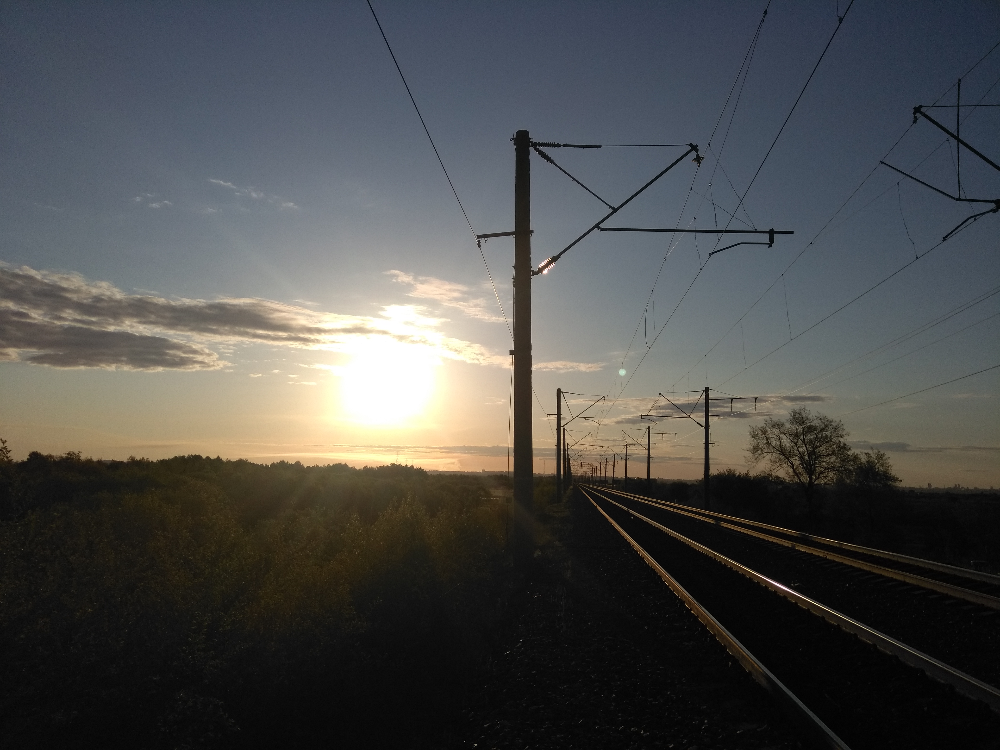

Дата публикации:
Концепцию развития туризма представили железнодорожники
Планируется, разработка железнодорожных путешествий по Байкало-Амурской магистрали и круизных туров от Японского моря до озера Байкал.
С начала года на ДВЖД уже запущены две новые программы в рамках образовательного проекта «Вагон знаний» для школьников: «Вагон знаний» в столице БАМа» и «Путешествие в страну РЖД». Железнодорожники намерены увеличивать количество маршрутов «отелей на колесах».
Источник — РЖД
